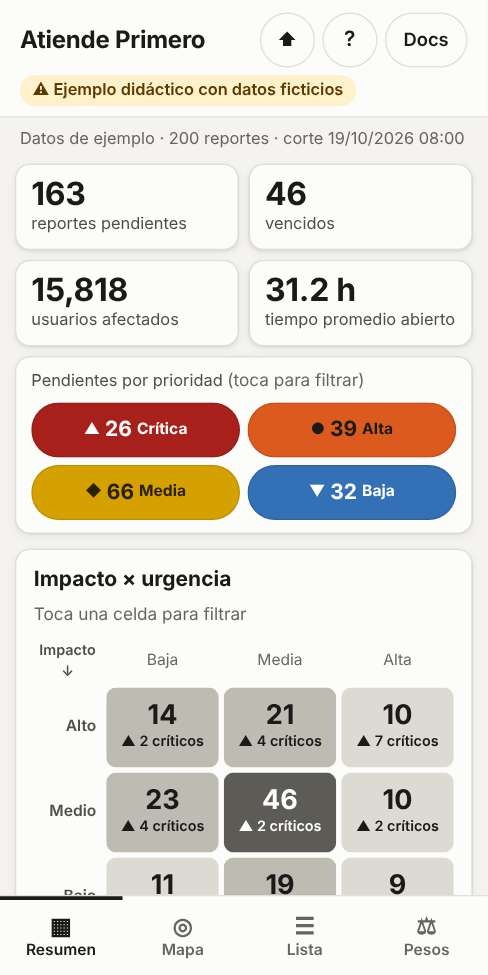
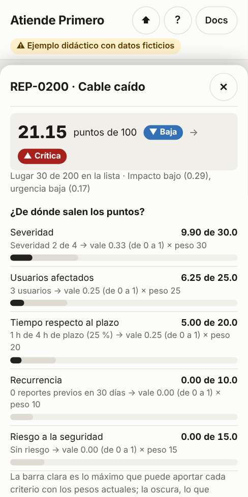

Qué es
Atiende Primero ordena reportes de fallas por prioridad y explica por qué. Lee los reportes y los criterios desde Excel, calcula un puntaje de 0 a 100 para cada reporte y lo muestra en un mapa de los municipios de Sonora, en una matriz de impacto y urgencia y en una lista de atención.
Es un ejemplo para aprender. Los 200 reportes son inventados: no hay datos reales, ni nombres de personas, ni números de servicio. No es un sistema oficial y no representa a ninguna institución.
También es un ejemplo de cómo construir una herramienta así con inteligencia artificial: se hizo con Claude Code, paso a paso. Todo el proceso está documentado para que puedas repetirlo.
Cómo usarla


- Mira el resumen. Cuántos reportes siguen pendientes, cuántos ya vencieron y cuántos hay de cada prioridad. Toca una prioridad para ver solo esos.
- Toca una celda de la matriz. Agrupa los reportes por impacto (qué tan grave y a cuántos afecta) y urgencia (cuánto del plazo se ha consumido y si se repite en el lugar).
- Explora el mapa. Los municipios más oscuros concentran más reportes críticos y altos. Toca uno para acercarte.
- Abre un reporte de la lista. Verás de dónde salió cada punto y qué regla subió su prioridad, si alguna lo hizo.
- Mueve los pesos. En la pestaña "Pesos" decide cuánto importa cada criterio y observa cómo se reordena todo. Con "Copiar enlace" compartes tu priorización: el enlace solo lleva los pesos, no datos.
En computadora o proyector se ve todo a la vez. El botón ? repite el recorrido guiado y explica el cálculo con los criterios que estés usando.
Cómo calcula la prioridad
- Cada criterio se convierte a un valor de 0 a 1: severidad, usuarios afectados, tiempo respecto al plazo, reportes previos en la localidad y riesgo a la seguridad.
- Cada valor se multiplica por su peso y se suman: así sale un puntaje de 0 a 100.
- El puntaje da una prioridad: crítica desde 70, alta desde 50, media desde 30 y baja por debajo.
- Las reglas duras pueden subir la prioridad, pero nunca bajarla. Por ejemplo, un cable caído o un riesgo a la seguridad siempre son críticos, aunque su puntaje sea bajo.
Ejemplo: un cable caído que afecta a 3 usuarios suma 21.15 puntos, lo que sería prioridad baja. Pero la regla de cable caído lo vuelve crítico. Los números no lo dicen todo; las reglas protegen lo que no se puede dejar al puntaje.
La prioridad es una sugerencia para ordenar el trabajo. La decisión final es de las personas.
Privacidad
- Tus archivos no salen de tu dispositivo. Todo se calcula en tu navegador: no hay servidor, base de datos, analítica ni rastreo.
- La página bloquea cualquier conexión de red. La única excepción es la capa opcional de calles del mapa, que viene apagada y avisa antes de activarse.
- Después de abrirla funciona sin conexión, incluso para cargar y exportar Excel.
- No cargues datos reales de ninguna institución.
Hazlo tú con Claude Code
Esta herramienta se construyó con Claude Code en la web, sin instalar nada, en 7 fases: plan, datos, modelo, dashboard, validación, documentación y publicación. En cada fase la IA propuso opciones, una persona decidió y todo quedó registrado.
Necesitas una cuenta de GitHub y un plan de Claude que incluya Claude Code. La guía paso a paso, con los prompts usados en cada fase, está en el repositorio del proyecto:
- Guía para replicar el proyecto
- Bitácora completa: cada instrucción y cada decisión
- Código del proyecto
Estos enlaces abren GitHub y necesitan internet.
Adáptala a tu área
Toca ⬆ en la herramienta, descarga los Excel de ejemplo, edítalos y vuelve a cargarlos. Sin tocar código puedes:
- usar tus propios reportes, aunque sean de otro tipo: mantenimiento, quejas, inspecciones o incidencias;
- cambiar los pesos, las tablas de conversión y los umbrales;
- escribir tus reglas duras, incluso sobre columnas nuevas (por ejemplo, "si la zona es hospital, crítica").
Para cambios de fondo (criterios nuevos u otra región) consulta la guía de adaptación.
Limitaciones
- No decide, no asigna cuadrillas ni calcula rutas.
- No aprende de datos históricos: es una fórmula fija y transparente.
- No tiene usuarios ni historial de cambios, y no se conecta a ningún sistema.
- El mapa está simplificado: no sirve para medir distancias.
- Usarla con datos reales requeriría autorización formal, clasificar la información, cumplir la normatividad de transparencia y datos personales y usar infraestructura institucional.
Fuentes y licencias
- Fuente: INEGI, Marco Geoestadístico, Encuesta Intercensal 2025 (límites municipales).
- Fuente: INEGI, Censo de Población y Vivienda 2020 (población y ubicación de localidades).
Los límites fueron simplificados y los datos se transformaron para este ejemplo. No son una representación oficial y el INEGI no tiene relación con este proyecto. Los reportes son ficticios.
- Bibliotecas incluidas: Leaflet 1.9.4 (licencia BSD-2-Clause) y SheetJS Community Edition 0.20.3 (licencia Apache 2.0).
- Código: licencia MIT. Documentación y datos ficticios: licencia CC BY 4.0.
Hecho por RolandoGR con Claude Code.